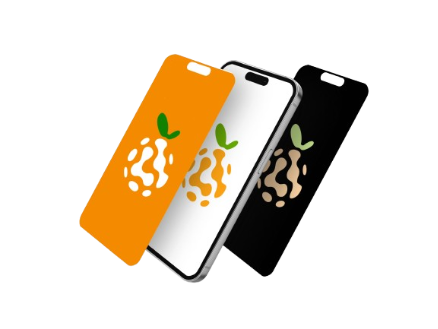
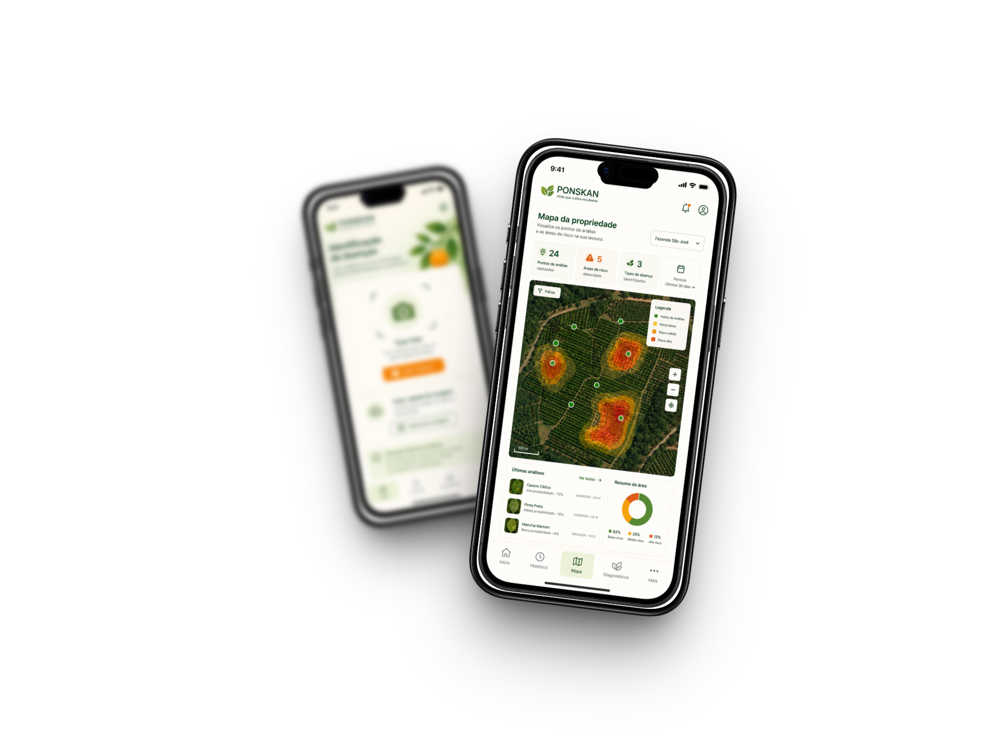
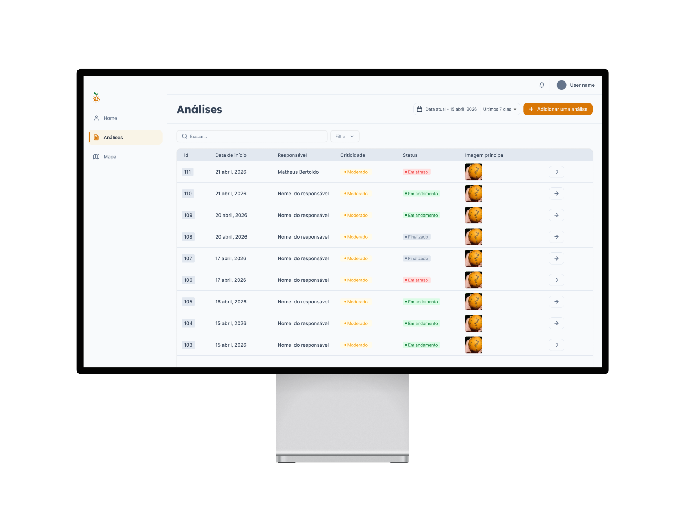
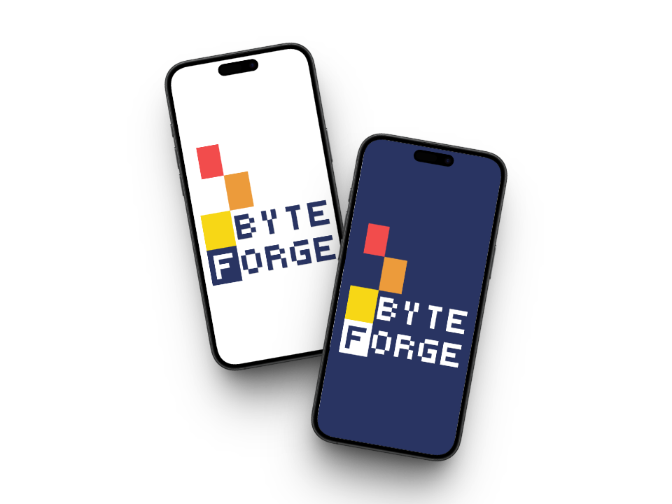
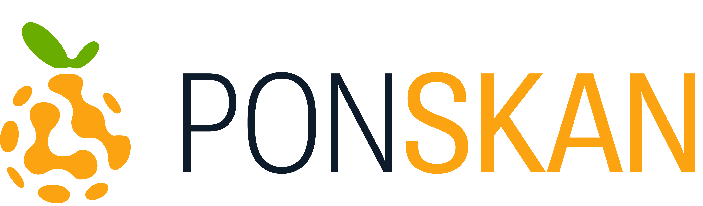
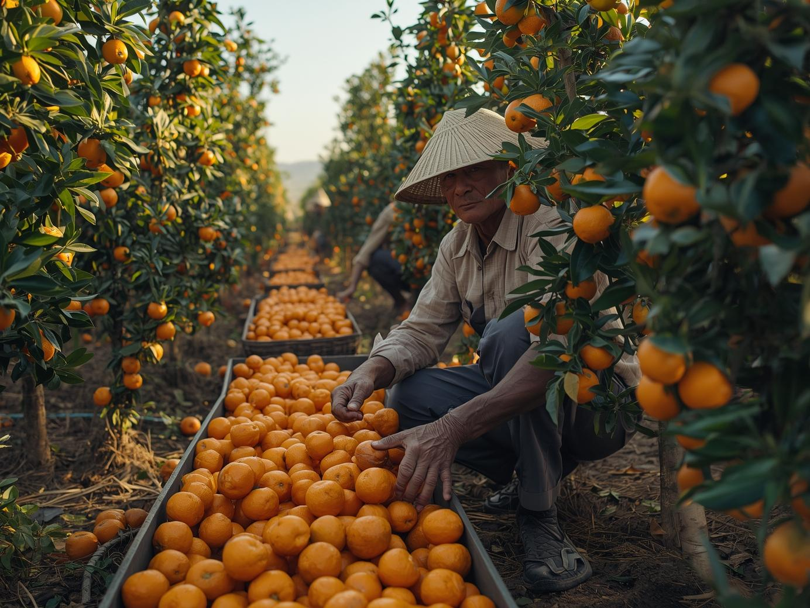
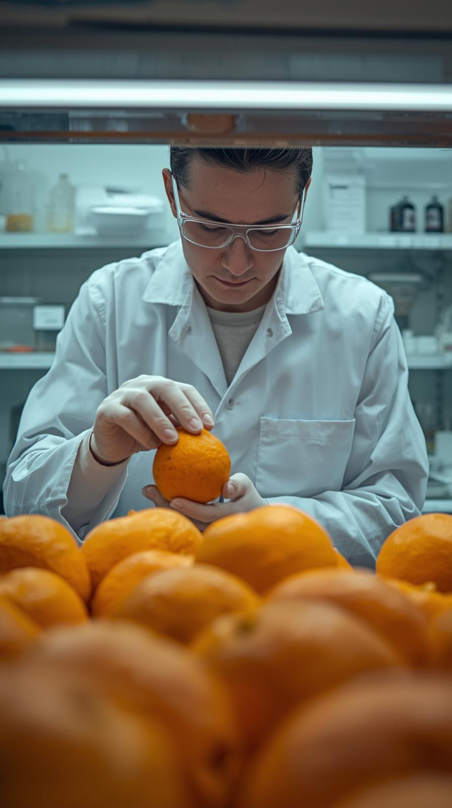

A excelência no desenvolvimento
de software.






A excelência no desenvolvimento
de software.




Seu negócio não precisa se aventurar em tendências passageiras ou promessas milagrosas.
Procuram-se solucionadores de problemas que possam compreender e executar aquilo que o cliente deseja, de forma
eficiente e segura.
É assim que a Byteforge desenvolve o seu software:
A chama da criatividade e uma sólida base técnica forjam a excelência.
Nossos sistemas atendem grandes empresas, novos empreendimentos e comunidades inteiras nos ramos de
administração, venda, comunicação, educação e muitos outros.
Utilizamos tanto tecnologias bem fundamentadas como disruptivas para
proporcionar resultados inovadores ao seu negócio, com os menores riscos possíveis.
Desenvolver sistemas de informação não é uma tarefa simples – é uma atividade essencial dentro
de um mundo interconectado e de altas velocidades.
Conheça nossas soluções abaixo:



O PONSKAN é um aplicativo móvel de agricultura de precisão desenvolvido para o monitoramento fitossanitário da
cultura da tangerina ponkan.
Utilizamos algoritmos de visão computacional para o pré-diagnóstico da pinta preta dos citros a partir de
imagens capturadas por câmera, permitindo a detecção precoce de sintomas foliares e frutíferos.
Isso é agricultura de precisão
que a sua tangerina precisa,
na palma da sua mão.






Para os produtores agrícolas, o Ponskan é o sistema de gerenciamento da saúde do pomar.
Para os engenheiros agrônomos, o Ponskan é o aplicativo de análise de dados ideal para suas pesquisas.
Para os consultores técnicos, o Ponskan é a ferramenta de trabalho que eleva o seu nível profissional.
O que o Ponskan pode ser para você?

"O Ponskan mudou completamente a forma como acompanhamos a saúde do pomar. Hoje conseguimos identificar problemas muito antes deles se espalharem, economizando tempo, insumos e aumentando a produtividade."
A base do projeto é o treinamento de redes neurais para reconhecimento de sintomas da pinta preta através de técnicas de visão computacional.
PONSKAN consegue enxergar os sintomas
As fotos da fruta serão tratadas para permitir análise de imagens com técnicas modernas
PONSKAN aprende com os dados
Com redes neurais, o sistema entende padrões e gera uma probabilidade da amostra estar doente ou não.
O sistema interpreta
O sistema cruza o resultado da rede neural com dados climáticos e sua geolocalização para gerar relatórios e planos de ação inteligentes
O produtor toma decisões inteligentes
PONSKAN proporciona agricultura de precisão para pequenos e médios produtores
Passe o cursor pelas etapas da função de identificação do Ponskan!

Analista de Dados e Arquiteto de Nuvem